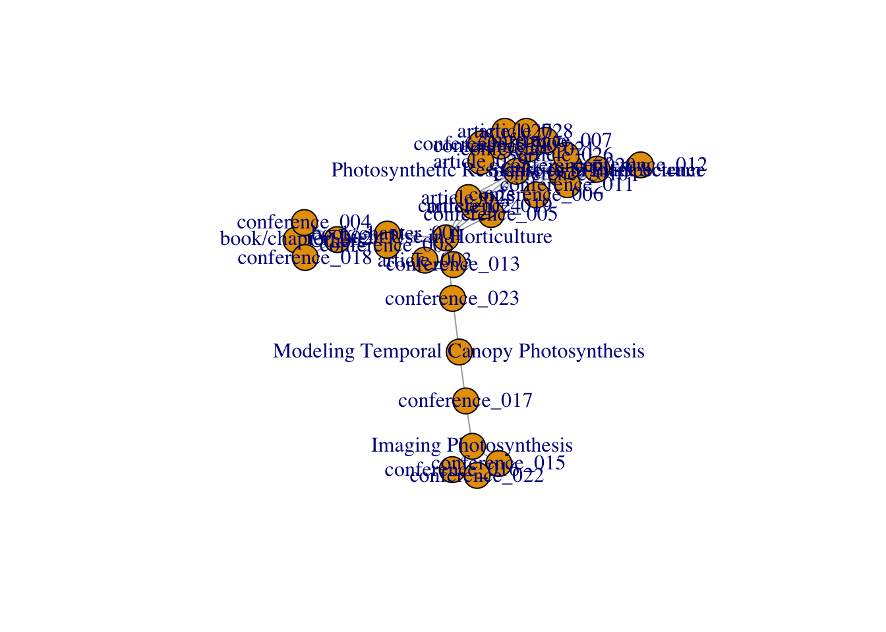
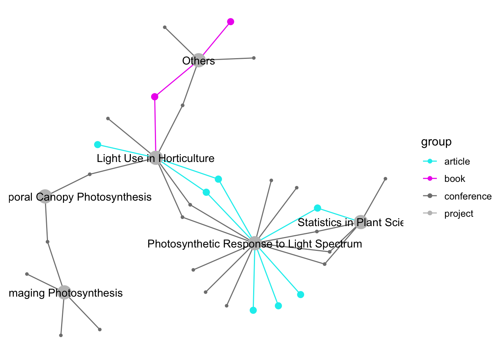

データ可視化系のネタ。
成果物はこれ。
データ読み込み
.bibファイルに適当な項目名 (projectとした) でテーマを登録する。
@article{Murakami_et_al2018PCE,
title={Quantification of excitation energy distribution between photosystems based on a mechanistic model of photosynthetic electron transport},
author={Murakami, Keach and Matsuda, Ryo and Fujiwara, Kazuhiro},
journal=PCE,
volume={41},
number={1},
pages={148--159},
year={2018},
month={January},
doi={10.1111/pce.12986},
project={Photosynthetic Response to Light Spectrum}
}@conference{intl005,
title={Time course of leaf content of cytochrome $b_6f$ complex and photosynthetic capacity after changes in growth irradiance},
author={Murakami, Keach and Zhu, Hui and Zeng, Ling-Da and Yi, Xiao-Ping and Peng, Chang-Lian and Zhang, Wang-Feng and Chow, Wah Soon},
year={2018},
month={September},
date={23--26},
type={Poster presentation},
symposium={ComBio2018},
short_symposium={ComBio2018},
address={Australia},
venue={International Convention Centre Sydney/Sydney},
project={Light Use in Horticulture, Modeling Temporal Canopy Photosynthesis}
}bib2dfパッケージを使って読み込み。
library(tidyverse)
library(bib2df)
bib_data <-
dir("~/Dropbox/r_packages/fudukue/bibtex/list_bib/", pattern = "^mywork", full.names = T) %>%
map_df(bib2df)
bib_data[1:4, 1:5] %>%
knitr::kable()| CATEGORY | BIBTEXKEY | ADDRESS | ANNOTE | AUTHOR |
|---|---|---|---|---|
| INCOLLECTION | Murakami_Matsuda2016Chap | Singapore | NA | c(“Murakami, Keach”, “Matsuda, Ryo”) |
| INCOLLECTION | Matsuda_Murakami2016Chap | Switzerland | NA | c(“Matsuda, Ryo”, “Murakami, Keach”) |
| ARTICLE | Matsuda_et_al2016SH | NA | NA | c(“Matsuda, Ryo”, “Yamano, Takuto”, “Murakami, Keach”, “Fujiwara, Kazuhiro”) |
| CONFERENCE | domest001 | 大阪 | NA | c(“松田, 怜”, “村上, 貴一”, “富士原, 和宏”) |
データクレンジング。
library(janitor)
tidy_bib_data <-
bib_data %>%
janitor::remove_empty("cols") %>%
janitor::clean_names() %>%
mutate(category = if_else(category %in% c("BOOK", "INBOOK", "INCOLLECTION"), "book/chapter", tolower(category)),
id = dplyr::row_number() %>%
stringr::str_pad(width = 3, side = "left", pad = "0") %>%
paste0(category, "_", .)) %>%
dplyr::select(id, project, category, type, title, year, doi, short = short_symposium, venue) %>%
tidyr::separate_rows(project, sep = ", ")
tidy_bib_data[1:4, 1:5] %>%
knitr::kable()| id | project | category | type | title |
|---|---|---|---|---|
| book/chapter_001 | Others | book/chapter | NA | Optical and Physiological Properties of a Leaf |
| book/chapter_001 | Light Use in Horticulture | book/chapter | NA | Optical and Physiological Properties of a Leaf |
| book/chapter_002 | Others | book/chapter | NA | Light- and \(\\textrm{CO}_2\)-Dependent Systemic Regulation of Photosynthesis |
| article_003 | Light Use in Horticulture | article | NA | Effects of spectral distribution and photosynthetic photon flux density for overnight {LED} light irradiation on tomato seedling growth and leaf injury |
ネットワーク作成
igraph::graph_from_data_frameは1列目と2列目を繋ぐので、列順が重要。 毎回ネットワークの形状が変わるので、一応set.seedしておく。
library(igraph)
set.seed(123)
igraph_obj <-
igraph::graph_from_data_frame(d = tidy_bib_data, directed = F)
plot(igraph_obj)
class(igraph_obj)## [1] "igraph"見栄えをよくするべく、ggnetworkパッケージでigprahオブジェクトをggplot用に整える。 ggnetworkはこのページがわかりやすかった。
library(ggnetwork)
df_network <-
igraph_obj %>%
ggnetwork(layout = "fruchtermanreingold")ggnetworkの出力をdplyrで扱おうとして引っかかった。
df_network %>%
mutate(hoge = "huga")
#> Error: Columns `x`, `y`, `xend`, `yend` must be 1d atomic vectors or liststibbleはdata.frameと異なり、matrixを包含することができないのが原因らしい。 これはバグのようで、近いうちに直されそうな感じ (Allow matrix and data frame columns)。
n <- network::network(sna::rgraph(5, tprob = 0.2))
net <- ggnetwork::ggnetwork(n)
mutate(net, hoge = "hoge")
#> Error: Columns `x`, `y`, `xend`, `yend` must be 1d atomic vectors or lists
net$x
#> [,1]
#> [1,] 0.2249716
#> [2,] 1.0000000
#> [3,] 0.8017759
#> [4,] 0.5301314
#> [5,] 0.0000000
#> [6,] 0.0000000
#> [7,] 0.5301314
#> [8,] 0.8017759
net %>% as.tibble
#> Error: Columns `x`, `y`, `xend`, `yend` must be 1d atomic vectors or lists
tibble(x = matrix(1:5, ncol = 1))
#> Error: Column `x` must be a 1d atomic vector or a list
# リストで包むと通る
(tbl_mtrx <- tibble(x = list(matrix(1:5, ncol = 1))))
#> # A tibble: 1 x 1
#> x
#> <list>
#> 1 <int [5 × 1]>
# unnestするとvectorにdropするっぽい
tidyr::unnest(tbl_mtrx)
# A tibble: 5 x 1
#> x
#> <int>
#> 1 1
#> 2 2
#> 3 3
#> 4 4
#> 5 5as.matrix %>% as_tibbleで強引にtibble型に変えると、dplyr系関数が使える。
df_network <-
df_network %>%
as.matrix %>%
as_tibble %>%
mutate_at(.vars = vars(x, y, xend, yend, year), .funs = as.numeric) %>% # 文字列を数値に戻す
mutate(group = str_extract(vertex.names, "[a-z]*"),
group = if_else(group %in% c("article", "conference", "book"), group, "project")) # あとでカテゴリ別に色分けしたいので
knitr::kable(df_network)| x | y | na.x | vertex.names | xend | yend | category | doi | na.y | short | title | type | venue | year | group |
|---|---|---|---|---|---|---|---|---|---|---|---|---|---|---|
| 0.3564629 | 0.7606544 | FALSE | book/chapter_001 | 0.3564629 | 0.7606544 | NA | NA | NA | NA | NA | NA | NA | NA | book |
| 0.5682415 | 1.0000000 | FALSE | book/chapter_002 | 0.5682415 | 1.0000000 | NA | NA | NA | NA | NA | NA | NA | NA | book |
| 0.1973102 | 0.6080856 | FALSE | article_003 | 0.1973102 | 0.6080856 | NA | NA | NA | NA | NA | NA | NA | NA | article |
| 0.6329070 | 0.8842712 | FALSE | conference_004 | 0.6329070 | 0.8842712 | NA | NA | NA | NA | NA | NA | NA | NA | conference |
| 0.4339224 | 0.3767279 | FALSE | conference_005 | 0.4339224 | 0.3767279 | NA | NA | NA | NA | NA | NA | NA | NA | conference |
| 0.7525673 | 0.4706679 | FALSE | conference_006 | 0.7525673 | 0.4706679 | NA | NA | NA | NA | NA | NA | NA | NA | conference |
| 0.4984273 | 0.1377537 | FALSE | conference_007 | 0.4984273 | 0.1377537 | NA | NA | NA | NA | NA | NA | NA | NA | conference |
| 0.4343270 | 0.7332506 | FALSE | conference_008 | 0.4343270 | 0.7332506 | NA | NA | NA | NA | NA | NA | NA | NA | conference |
| 0.5570582 | 0.0943262 | FALSE | conference_009 | 0.5570582 | 0.0943262 | NA | NA | NA | NA | NA | NA | NA | NA | conference |
| 0.8445277 | 0.2662823 | FALSE | conference_010 | 0.8445277 | 0.2662823 | NA | NA | NA | NA | NA | NA | NA | NA | conference |
| 0.8087631 | 0.3309935 | FALSE | conference_011 | 0.8087631 | 0.3309935 | NA | NA | NA | NA | NA | NA | NA | NA | conference |
| 1.0000000 | 0.4993646 | FALSE | conference_012 | 1.0000000 | 0.4993646 | NA | NA | NA | NA | NA | NA | NA | NA | conference |
| 0.2260585 | 0.6913162 | FALSE | conference_013 | 0.2260585 | 0.6913162 | NA | NA | NA | NA | NA | NA | NA | NA | conference |
| 0.6816995 | 0.4940149 | FALSE | conference_014 | 0.6816995 | 0.4940149 | NA | NA | NA | NA | NA | NA | NA | NA | conference |
| 0.2032883 | 0.0185217 | FALSE | conference_015 | 0.2032883 | 0.0185217 | NA | NA | NA | NA | NA | NA | NA | NA | conference |
| 0.0000000 | 0.1954500 | FALSE | conference_016 | 0.0000000 | 0.1954500 | NA | NA | NA | NA | NA | NA | NA | NA | conference |
| 0.0575966 | 0.2983583 | FALSE | conference_017 | 0.0575966 | 0.2983583 | NA | NA | NA | NA | NA | NA | NA | NA | conference |
| 0.3844490 | 0.9821992 | FALSE | conference_018 | 0.3844490 | 0.9821992 | NA | NA | NA | NA | NA | NA | NA | NA | conference |
| 0.4554287 | 0.4163133 | FALSE | conference_019 | 0.4554287 | 0.4163133 | NA | NA | NA | NA | NA | NA | NA | NA | conference |
| 0.8304311 | 0.2271776 | FALSE | conference_020 | 0.8304311 | 0.2271776 | NA | NA | NA | NA | NA | NA | NA | NA | conference |
| 0.4640695 | 0.2087334 | FALSE | conference_021 | 0.4640695 | 0.2087334 | NA | NA | NA | NA | NA | NA | NA | NA | conference |
| 0.0947808 | 0.0000000 | FALSE | conference_022 | 0.0947808 | 0.0000000 | NA | NA | NA | NA | NA | NA | NA | NA | conference |
| 0.1753379 | 0.5134788 | FALSE | conference_023 | 0.1753379 | 0.5134788 | NA | NA | NA | NA | NA | NA | NA | NA | conference |
| 0.5003495 | 0.4561548 | FALSE | article_024 | 0.5003495 | 0.4561548 | NA | NA | NA | NA | NA | NA | NA | NA | article |
| 0.5340257 | 0.4979847 | FALSE | article_025 | 0.5340257 | 0.4979847 | NA | NA | NA | NA | NA | NA | NA | NA | article |
| 0.8106316 | 0.4057778 | FALSE | article_026 | 0.8106316 | 0.4057778 | NA | NA | NA | NA | NA | NA | NA | NA | article |
| 0.7014519 | 0.0941772 | FALSE | article_027 | 0.7014519 | 0.0941772 | NA | NA | NA | NA | NA | NA | NA | NA | article |
| 0.6312999 | 0.0798881 | FALSE | article_028 | 0.6312999 | 0.0798881 | NA | NA | NA | NA | NA | NA | NA | NA | article |
| 0.7634561 | 0.1299868 | FALSE | article_029 | 0.7634561 | 0.1299868 | NA | NA | NA | NA | NA | NA | NA | NA | article |
| 0.4790799 | 0.8769860 | FALSE | Others | 0.4790799 | 0.8769860 | NA | NA | NA | NA | NA | NA | NA | NA | project |
| 0.3596180 | 0.5660283 | FALSE | Light Use in Horticulture | 0.3596180 | 0.5660283 | NA | NA | NA | NA | NA | NA | NA | NA | project |
| 0.6359569 | 0.2937061 | FALSE | Photosynthetic Response to Light Spectrum | 0.6359569 | 0.2937061 | NA | NA | NA | NA | NA | NA | NA | NA | project |
| 0.9314290 | 0.3610911 | FALSE | Statistics in Plant Science | 0.9314290 | 0.3610911 | NA | NA | NA | NA | NA | NA | NA | NA | project |
| 0.1044156 | 0.1370176 | FALSE | Imaging Photosynthesis | 0.1044156 | 0.1370176 | NA | NA | NA | NA | NA | NA | NA | NA | project |
| 0.0507163 | 0.4429380 | FALSE | Modeling Temporal Canopy Photosynthesis | 0.0507163 | 0.4429380 | NA | NA | NA | NA | NA | NA | NA | NA | project |
| 0.0000000 | 0.1954500 | FALSE | conference_016 | 0.1044156 | 0.1370176 | conference | NA | FALSE | 中四国農業気象2017 | 分光反射画像計測による葉位別光合成速度推定にむけて: PRIの光応答の評価 | Oral presentation | 湖山キャンパス/鳥取大学 | 2017 | conference |
| 0.0575966 | 0.2983583 | FALSE | conference_017 | 0.1044156 | 0.1370176 | conference | NA | FALSE | 農業気象2018 | 分光画像計測による光合成速度分布解析の試み | Oral presentation | 伊都キャンパス/九州大学 | 2018 | conference |
| 0.0575966 | 0.2983583 | FALSE | conference_017 | 0.0507163 | 0.4429380 | conference | NA | FALSE | 農業気象2018 | 分光画像計測による光合成速度分布解析の試み | Oral presentation | 伊都キャンパス/九州大学 | 2018 | conference |
| 0.0947808 | 0.0000000 | FALSE | conference_022 | 0.1044156 | 0.1370176 | conference | NA | FALSE | IHC2018 | Spectral imaging for evaluation of spatial distributions of leaf photosynthetic Light Use efficiency | Oral presentation | Istanbul Congress Center/Istanbul | 2018 | conference |
| 0.1753379 | 0.5134788 | FALSE | conference_023 | 0.3596180 | 0.5660283 | conference | NA | FALSE | ComBio2018 | Time course of leaf content of cytochrome \(b_6f\) complex and photosynthetic capacity after changes in growth irradiance | Poster presentation | International Convention Centre Sydney/Sydney | 2018 | conference |
| 0.1753379 | 0.5134788 | FALSE | conference_023 | 0.0507163 | 0.4429380 | conference | NA | FALSE | ComBio2018 | Time course of leaf content of cytochrome \(b_6f\) complex and photosynthetic capacity after changes in growth irradiance | Poster presentation | International Convention Centre Sydney/Sydney | 2018 | conference |
| 0.1973102 | 0.6080856 | FALSE | article_003 | 0.3596180 | 0.5660283 | article | 10.1016/j.scienta.2015.11.045 | FALSE | NA | Effects of spectral distribution and photosynthetic photon flux density for overnight {LED} light irradiation on tomato seedling growth and leaf injury | NA | NA | 2016 | article |
| 0.2032883 | 0.0185217 | FALSE | conference_015 | 0.1044156 | 0.1370176 | conference | NA | FALSE | 生環工2017 | 葉面反射画像計測による光合成光利用効率の光環境変化に対する応答の評価の試み | Oral presentation | 樽味キャンパス/愛媛大学 | 2017 | conference |
| 0.2260585 | 0.6913162 | FALSE | conference_013 | 0.3596180 | 0.5660283 | conference | NA | FALSE | 農業気象2016 | 夜間に照射する LED 光の分光分布および PPFD がトマト苗の成育および可視障害に及ぼす影響 | Oral presentation | 津島キャンパス/岡山大学 | 2016 | conference |
| 0.3564629 | 0.7606544 | FALSE | book/chapter_001 | 0.4790799 | 0.8769860 | book/chapter | 10.1007/978-981-10-1848-0 | FALSE | NA | Optical and Physiological Properties of a Leaf | NA | NA | 2016 | book |
| 0.3564629 | 0.7606544 | FALSE | book/chapter_001 | 0.3596180 | 0.5660283 | book/chapter | 10.1007/978-981-10-1848-0 | FALSE | NA | Optical and Physiological Properties of a Leaf | NA | NA | 2016 | book |
| 0.3844490 | 0.9821992 | FALSE | conference_018 | 0.4790799 | 0.8769860 | conference | NA | FALSE | 農業気象2018 | 深層学習を用いた葉面積推定に関する研究 | Oral presentation | 伊都キャンパス/九州大学 | 2018 | conference |
| 0.4339224 | 0.3767279 | FALSE | conference_005 | 0.3596180 | 0.5660283 | conference | NA | FALSE | 生環工2012 | インゲンマメ下位葉への単色 LED 光照射が上位葉の光合成特性に及ぼす影響 | Oral presentation | 弥生キャンパス/東京大学 | 2012 | conference |
| 0.4339224 | 0.3767279 | FALSE | conference_005 | 0.6359569 | 0.2937061 | conference | NA | FALSE | 生環工2012 | インゲンマメ下位葉への単色 LED 光照射が上位葉の光合成特性に及ぼす影響 | Oral presentation | 弥生キャンパス/東京大学 | 2012 | conference |
| 0.4343270 | 0.7332506 | FALSE | conference_008 | 0.4790799 | 0.8769860 | conference | NA | FALSE | 農業気象2014 | 下位葉補光・終夜補光の光質が植物の光合成特性と成育に及ぼす影響 | Oral presentation | 札幌キャンパス/北海道大学 | 2014 | conference |
| 0.4343270 | 0.7332506 | FALSE | conference_008 | 0.3596180 | 0.5660283 | conference | NA | FALSE | 農業気象2014 | 下位葉補光・終夜補光の光質が植物の光合成特性と成育に及ぼす影響 | Oral presentation | 札幌キャンパス/北海道大学 | 2014 | conference |
| 0.4554287 | 0.4163133 | FALSE | conference_019 | 0.3596180 | 0.5660283 | conference | NA | FALSE | LightSym2012 | Effect of supplemental lighting to a lower leaf using LEDs with different wavelengths on leaf photosynthetic characteristics in sweet pepper | Poster presentation | Wageningen Unversity/Wageningen | 2012 | conference |
| 0.4554287 | 0.4163133 | FALSE | conference_019 | 0.6359569 | 0.2937061 | conference | NA | FALSE | LightSym2012 | Effect of supplemental lighting to a lower leaf using LEDs with different wavelengths on leaf photosynthetic characteristics in sweet pepper | Poster presentation | Wageningen Unversity/Wageningen | 2012 | conference |
| 0.4640695 | 0.2087334 | FALSE | conference_021 | 0.6359569 | 0.2937061 | conference | NA | FALSE | ICEC/AusPheno 2016 | Non-destructive estimation of light energy distribution between photosystems | Oral presentation | CSIRO/Canberra | 2016 | conference |
| 0.4984273 | 0.1377537 | FALSE | conference_007 | 0.6359569 | 0.2937061 | conference | NA | FALSE | 農業気象2014 | 種々のピーク波長の LED を用いた混合光照射下におけるコスレタス葉の光合成量子収率 | Oral presentation | 札幌キャンパス/北海道大学 | 2014 | conference |
| 0.5003495 | 0.4561548 | FALSE | article_024 | 0.3596180 | 0.5660283 | article | 10.2480/agrmet.69.2.2 | FALSE | NA | Effects of supplemental lighting to a lower leaf using light-emitting diodes with different spectra on the leaf photosynthetic rate in sweet pepper | NA | NA | 2013 | article |
| 0.5003495 | 0.4561548 | FALSE | article_024 | 0.6359569 | 0.2937061 | article | 10.2480/agrmet.69.2.2 | FALSE | NA | Effects of supplemental lighting to a lower leaf using light-emitting diodes with different spectra on the leaf photosynthetic rate in sweet pepper | NA | NA | 2013 | article |
| 0.5340257 | 0.4979847 | FALSE | article_025 | 0.3596180 | 0.5660283 | article | 10.1111/plb.12055 | FALSE | NA | Light-induced systemic regulation of photosynthesis in primary and trifoliate leaves of : effects of photosynthetic photon flux density ({PPFD}) spectrum | NA | NA | 2014 | article |
| 0.5340257 | 0.4979847 | FALSE | article_025 | 0.6359569 | 0.2937061 | article | 10.1111/plb.12055 | FALSE | NA | Light-induced systemic regulation of photosynthesis in primary and trifoliate leaves of : effects of photosynthetic photon flux density ({PPFD}) spectrum | NA | NA | 2014 | article |
| 0.5570582 | 0.0943262 | FALSE | conference_009 | 0.6359569 | 0.2937061 | conference | NA | FALSE | 光合成学会2014 | 異なる狭波長帯 LED 光の混合照射下における個葉の総光合成速度の推定 | Poster presentation | 奈良キャンパス/近畿大学 | 2014 | conference |
| 0.5682415 | 1.0000000 | FALSE | book/chapter_002 | 0.4790799 | 0.8769860 | book/chapter | 10.1007/978-3-319-25688-7_4 | FALSE | NA | Light- and \(\\textrm{CO}_2\)-Dependent Systemic Regulation of Photosynthesis | NA | NA | 2016 | book |
| 0.6312999 | 0.0798881 | FALSE | article_028 | 0.6359569 | 0.2937061 | article | 10.1093/pcp/pcy085 | FALSE | NA | A mathematical model of photosynthetic electron transport in response to light spectrum based on excitation energy distributed to photosystems | NA | NA | 2018 | article |
| 0.6329070 | 0.8842712 | FALSE | conference_004 | 0.4790799 | 0.8769860 | conference | NA | FALSE | 農業気象2012 | トマト養液栽培における葉面積指数推定モデルの構築: 気孔コンダクタンスモデルの検討 | Poster presentation | 中百舌鳥キャンパス/大阪府立大学 | 2012 | conference |
| 0.6816995 | 0.4940149 | FALSE | conference_014 | 0.6359569 | 0.2937061 | conference | NA | FALSE | 光合成学会2017 | 光化学系I・II間での励起エネルギー分配比の非破壊定量法の開発 | Poster presentation | 瀬田キャンパス/龍谷大学 | 2017 | conference |
| 0.7014519 | 0.0941772 | FALSE | article_027 | 0.6359569 | 0.2937061 | article | 10.1111/pce.12986 | FALSE | NA | Quantification of excitation energy distribution between photosystems based on a mechanistic model of photosynthetic electron transport | NA | NA | 2018 | article |
| 0.7525673 | 0.4706679 | FALSE | conference_006 | 0.6359569 | 0.2937061 | conference | NA | FALSE | 生環工2013 | 異なるピーク波長の LED を用いた混合光照射下における個葉の光合成量子収率 | Oral presentation | 幸町キャンパス/香川大学 | 2013 | conference |
| 0.7634561 | 0.1299868 | FALSE | article_029 | 0.6359569 | 0.2937061 | article | 10.1111/ppl.12745 | FALSE | NA | Time course of the photochemical reflectance index (PRI) during photosynthetic induction: its relationship with the photochemical yield of photosystem II | NA | NA | 2018 | article |
| 0.8087631 | 0.3309935 | FALSE | conference_011 | 0.6359569 | 0.2937061 | conference | NA | FALSE | 生環工2015 | 栽培中の遠赤色光添加は栽培後の葉の光合成速度を小さくするのか？ | Oral presentation | シーガイア | 2015 | conference |
| 0.8087631 | 0.3309935 | FALSE | conference_011 | 0.9314290 | 0.3610911 | conference | NA | FALSE | 生環工2015 | 栽培中の遠赤色光添加は栽培後の葉の光合成速度を小さくするのか？ | Oral presentation | シーガイア | 2015 | conference |
| 0.8106316 | 0.4057778 | FALSE | article_026 | 0.6359569 | 0.2937061 | article | 10.1111/ppl.12421 | FALSE | NA | Interaction between the spectral photon flux density distributions of light during growth and for measurements in net photosynthetic rates of cucumber leaves | NA | NA | 2016 | article |
| 0.8106316 | 0.4057778 | FALSE | article_026 | 0.9314290 | 0.3610911 | article | 10.1111/ppl.12421 | FALSE | NA | Interaction between the spectral photon flux density distributions of light during growth and for measurements in net photosynthetic rates of cucumber leaves | NA | NA | 2016 | article |
| 0.8304311 | 0.2271776 | FALSE | conference_020 | 0.6359569 | 0.2937061 | conference | NA | FALSE | GreenSys2015 | A difference in net photosynthetic rate between leaves grown with and without far-red light depends on the spectral distribution of measuring light | Poster presentation | Universidade Évora/ | 2015 | conference |
| 0.8304311 | 0.2271776 | FALSE | conference_020 | 0.9314290 | 0.3610911 | conference | NA | FALSE | GreenSys2015 | A difference in net photosynthetic rate between leaves grown with and without far-red light depends on the spectral distribution of measuring light | Poster presentation | Universidade Évora/ | 2015 | conference |
| 0.8445277 | 0.2662823 | FALSE | conference_010 | 0.6359569 | 0.2937061 | conference | NA | FALSE | 農業気象2015 | 異なる分光分布の光照射下で成育した葉の光合成速度比較結果は測定光分光分布に影響される | Oral presentation | 文部科学省研究交流センター | 2015 | conference |
| 0.8445277 | 0.2662823 | FALSE | conference_010 | 0.9314290 | 0.3610911 | conference | NA | FALSE | 農業気象2015 | 異なる分光分布の光照射下で成育した葉の光合成速度比較結果は測定光分光分布に影響される | Oral presentation | 文部科学省研究交流センター | 2015 | conference |
| 1.0000000 | 0.4993646 | FALSE | conference_012 | 0.9314290 | 0.3610911 | conference | NA | FALSE | 農業気象2016 | サンプルサイズ (\(n\)）の検定力分析による決定 —グロースチャンバでの植物栽培試験での例— | Poster presentation | 津島キャンパス/岡山大学 | 2016 | conference |
このままだと取り回しが悪いので、node部分とedge部分を分離して扱う。 ggplotとplotlyでの図示用にデータフレームを整える。
# node数をカウント
node_num <-
is.na(df_network$na.y) %>% sum
# node部分だけ抜き出す
df_node <-
df_network[seq_len(node_num),] %>%
janitor::remove_empty("cols") %>%
mutate(node_size = if_else(group == "project", 10, 1),
node_size = if_else(group %in% c("article", "book"), 2, node_size)) # ノードサイズをカテゴリ別に
# 残るedge部分をハンドリング
df_edge <-
df_network[-seq_len(node_num),] %>%
janitor::remove_empty("cols")
# plotly hover用
df_tooltip <-
df_edge %>%
transmute(vertex.names,
link = if_else(is.na(doi), "", paste0('<a href="https://doi.org/', doi, '">LINK</a>')),
title,
year)
# hoverの要不要に応じてprojectとそれ以外を分ける
# 空行でもNAが表示されて鬱陶しいので
df_node %>%
left_join(., df_tooltip, by = "vertex.names") %>%
{
df_node_projects <<-
dplyr::filter(., group == "project")
df_node_items <<-
dplyr::filter(., group != "project")
}ggplotで重ねていく。
fig_ggplot <-
df_node %>%
ggplot(aes(x, y, col = group)) +
geom_segment(data = df_edge, aes(xend = xend, yend = yend)) +
geom_point(data = df_node_items, aes(size = node_size, text = year)) +
geom_point(data = df_node_projects, aes(size = node_size), hoverinfo = "none") +
geom_text(data = df_node_projects, aes(label = vertex.names), col = "black") +
scale_color_manual(values = c("cyan2", "magenta2", "grey50", "grey75")) +
guides(size = F) +
theme_blank()
fig_ggplot
plotlyでinteractiveにして冒頭の図が完成。
library(plotly)
delete_axis <-
list(title = "", ticklen = 0, zeroline = FALSE, showline = FALSE, showticklabels = FALSE, showgrid = FALSE)
fig_plotly <-
ggplotly(fig_ggplot, tooltip = "text") %>%
layout(xaxis = delete_axis, yaxis = delete_axis)
# htmlwidgetとして保存
setwd("../plotly")
htmlwidgets::saveWidget(fig_plotly, "research_network.html", selfcontained = T)
setwd("../post")ネットワークがもっと騒がしくなるように精進しよう。
Session Info
devtools::session_info()## setting value
## version R version 3.5.0 (2018-04-23)
## system x86_64, darwin15.6.0
## ui X11
## language (EN)
## collate en_US.UTF-8
## tz Australia/Brisbane
## date 2018-06-24
##
## package * version date source
## assertthat 0.2.0 2017-04-11 CRAN (R 3.5.0)
## backports 1.1.2 2017-12-13 CRAN (R 3.5.0)
## base * 3.5.0 2018-04-24 local
## bib2df * 1.0.1 2018-06-22 Github (ottlngr/bib2df@027215c)
## bindr 0.1.1 2018-03-13 CRAN (R 3.5.0)
## bindrcpp * 0.2.2 2018-03-29 CRAN (R 3.5.0)
## blogdown 0.6 2018-04-18 CRAN (R 3.5.0)
## bookdown 0.7 2018-02-18 CRAN (R 3.5.0)
## broom 0.4.4.9000 2018-06-21 Github (tidyverse/broom@2721de4)
## cellranger 1.1.0 2016-07-27 CRAN (R 3.5.0)
## cli 1.0.0 2017-11-05 CRAN (R 3.5.0)
## coda 0.19-1 2016-12-08 CRAN (R 3.5.0)
## codetools 0.2-15 2016-10-05 CRAN (R 3.5.0)
## colorspace 1.3-2 2016-12-14 CRAN (R 3.5.0)
## compiler 3.5.0 2018-04-24 local
## crayon 1.3.4 2017-09-16 CRAN (R 3.5.0)
## crosstalk 1.0.0 2016-12-21 CRAN (R 3.5.0)
## data.table 1.10.4-3 2017-10-27 CRAN (R 3.5.0)
## datasets * 3.5.0 2018-04-24 local
## devtools 1.13.5 2018-02-18 CRAN (R 3.5.0)
## digest 0.6.15 2018-01-28 CRAN (R 3.5.0)
## dplyr * 0.7.5 2018-05-19 cran (@0.7.5)
## evaluate 0.10.1 2017-06-24 CRAN (R 3.5.0)
## forcats * 0.3.0 2018-02-19 CRAN (R 3.5.0)
## ggnetwork * 0.5.1 2016-03-25 CRAN (R 3.5.0)
## ggplot2 * 2.2.1.9000 2018-06-21 Github (tidyverse/ggplot2@1c09bae)
## ggrepel 0.7.0 2017-09-29 CRAN (R 3.5.0)
## glue 1.2.0 2017-10-29 CRAN (R 3.5.0)
## graphics * 3.5.0 2018-04-24 local
## grDevices * 3.5.0 2018-04-24 local
## grid 3.5.0 2018-04-24 local
## gtable 0.2.0 2016-02-26 CRAN (R 3.5.0)
## haven 1.1.1 2018-01-18 CRAN (R 3.5.0)
## highr 0.6 2016-05-09 CRAN (R 3.5.0)
## hms 0.4.2 2018-03-10 CRAN (R 3.5.0)
## htmltools 0.3.6 2017-04-28 CRAN (R 3.5.0)
## htmlwidgets 1.2 2018-04-19 CRAN (R 3.5.0)
## httpuv 1.4.3 2018-05-10 cran (@1.4.3)
## httr 1.3.1 2017-08-20 CRAN (R 3.5.0)
## humaniformat 0.6.0 2016-04-24 cran (@0.6.0)
## igraph * 1.2.1 2018-03-10 CRAN (R 3.5.0)
## intergraph 2.0-2 2016-12-05 CRAN (R 3.5.0)
## janitor * 1.0.0 2018-03-22 CRAN (R 3.5.0)
## jsonlite 1.5 2017-06-01 CRAN (R 3.5.0)
## knitr 1.20 2018-02-20 CRAN (R 3.5.0)
## labeling 0.3 2014-08-23 CRAN (R 3.5.0)
## later 0.7.2 2018-05-01 cran (@0.7.2)
## lattice 0.20-35 2017-03-25 CRAN (R 3.5.0)
## lazyeval 0.2.1 2017-10-29 CRAN (R 3.5.0)
## lubridate 1.7.4 2018-04-11 CRAN (R 3.5.0)
## magrittr * 1.5 2014-11-22 CRAN (R 3.5.0)
## memoise 1.1.0 2017-04-21 CRAN (R 3.5.0)
## methods * 3.5.0 2018-04-24 local
## mime 0.5 2016-07-07 CRAN (R 3.5.0)
## modelr 0.1.2 2018-05-11 cran (@0.1.2)
## munsell 0.4.3 2016-02-13 CRAN (R 3.5.0)
## network * 1.13.0.1 2018-04-02 CRAN (R 3.5.0)
## nlme 3.1-137 2018-04-07 CRAN (R 3.5.0)
## pillar 1.2.3 2018-05-25 cran (@1.2.3)
## pkgconfig 2.0.1 2017-03-21 CRAN (R 3.5.0)
## plotly * 4.7.1 2017-07-29 CRAN (R 3.5.0)
## plyr 1.8.4 2016-06-08 CRAN (R 3.5.0)
## promises 1.0.1 2018-04-13 CRAN (R 3.5.0)
## purrr * 0.2.5 2018-05-29 cran (@0.2.5)
## R6 2.2.2 2017-06-17 CRAN (R 3.5.0)
## Rcpp 0.12.17 2018-05-18 cran (@0.12.17)
## readr * 1.1.1 2017-05-16 CRAN (R 3.5.0)
## readxl 1.1.0 2018-04-20 CRAN (R 3.5.0)
## reshape2 1.4.3 2017-12-11 CRAN (R 3.5.0)
## rlang 0.2.1 2018-05-30 cran (@0.2.1)
## rmarkdown 1.9 2018-03-01 CRAN (R 3.5.0)
## rprojroot 1.3-2 2018-01-03 CRAN (R 3.5.0)
## rstudioapi 0.7 2017-09-07 CRAN (R 3.5.0)
## rvest 0.3.2 2016-06-17 CRAN (R 3.5.0)
## scales 0.5.0 2017-08-24 CRAN (R 3.5.0)
## shiny 1.1.0 2018-05-17 cran (@1.1.0)
## sna * 2.4 2016-08-08 CRAN (R 3.5.0)
## snakecase 0.9.1 2018-03-25 CRAN (R 3.5.0)
## statnet.common * 4.1.2 2018-06-05 CRAN (R 3.5.0)
## stats * 3.5.0 2018-04-24 local
## stringi 1.2.2 2018-05-02 cran (@1.2.2)
## stringr * 1.3.1 2018-05-10 cran (@1.3.1)
## tibble * 1.4.2 2018-01-22 CRAN (R 3.5.0)
## tidyr * 0.8.1 2018-05-18 cran (@0.8.1)
## tidyselect 0.2.4 2018-02-26 CRAN (R 3.5.0)
## tidyverse * 1.2.1.9000 2018-06-21 Github (hadley/tidyverse@a720dcd)
## tools 3.5.0 2018-04-24 local
## utils * 3.5.0 2018-04-24 local
## viridisLite 0.3.0 2018-02-01 CRAN (R 3.5.0)
## withr 2.1.2 2018-03-15 CRAN (R 3.5.0)
## xfun 0.1 2018-01-22 CRAN (R 3.5.0)
## xml2 1.2.0 2018-01-24 CRAN (R 3.5.0)
## xtable 1.8-2 2016-02-05 CRAN (R 3.5.0)
## yaml 2.1.18 2018-03-08 CRAN (R 3.5.0)